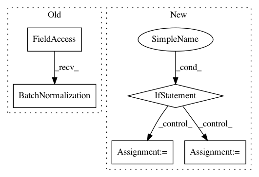

d90f5580d932b801ea3a9715d0dee00fc58ab55a,research/deep_speech/deep_speech_model.py,,_rnn_layer,#Any#Any#Any#Any#Any#Any#Any#,57
Before Change
tensor output for the current layer.
if is_batch_norm:
input_data = tf.keras.layers.BatchNormalization(
momentum=_MOMENTUM, epsilon=_EPSILON)(input_data)
rnn_layer = rnn_cell(
rnn_hidden_size, activation=rnn_activation, return_sequences=True,
name="rnn_{}".format(layer_id))
if is_bidirectional:
After Change
bw_cell = rnn_cell(num_units=rnn_hidden_size,
name="rnn_bw_{}".format(layer_id))
if is_bidirectional:
outputs, _ = tf.nn.bidirectional_dynamic_rnn(
cell_fw=fw_cell, cell_bw=bw_cell, inputs=inputs, dtype=tf.float32,
swap_memory=True)
rnn_outputs = tf.concat(outputs, -1)
else:
rnn_outputs = tf.nn.dynamic_rnn(
fw_cell, inputs, dtype=tf.float32, swap_memory=True)
return rnn_outputs
class DeepSpeech2(object):
In pattern: SUPERPATTERN
Frequency: 3
Non-data size: 5
Instances
Project Name: tensorflow/models
Commit Name: d90f5580d932b801ea3a9715d0dee00fc58ab55a
Time: 2018-07-10
Author: haoliang@google.com
File Name: research/deep_speech/deep_speech_model.py
Class Name:
Method Name: _rnn_layer
Project Name: tensorflow/models
Commit Name: a3e847b610a9ac39a719033393801a0c7af51eb2
Time: 2020-10-16
Author: arashwan@google.com
File Name: official/vision/keras_cv/layers/deeplab.py
Class Name: SpatialPyramidPooling
Method Name: build
Project Name: osmr/imgclsmob
Commit Name: 4c252770d83c50e207371d74db626767785a40b7
Time: 2020-04-02
Author: osemery@gmail.com
File Name: chainer_/chainercv2/models/common.py
Class Name: PreConvBlock
Method Name: __init__